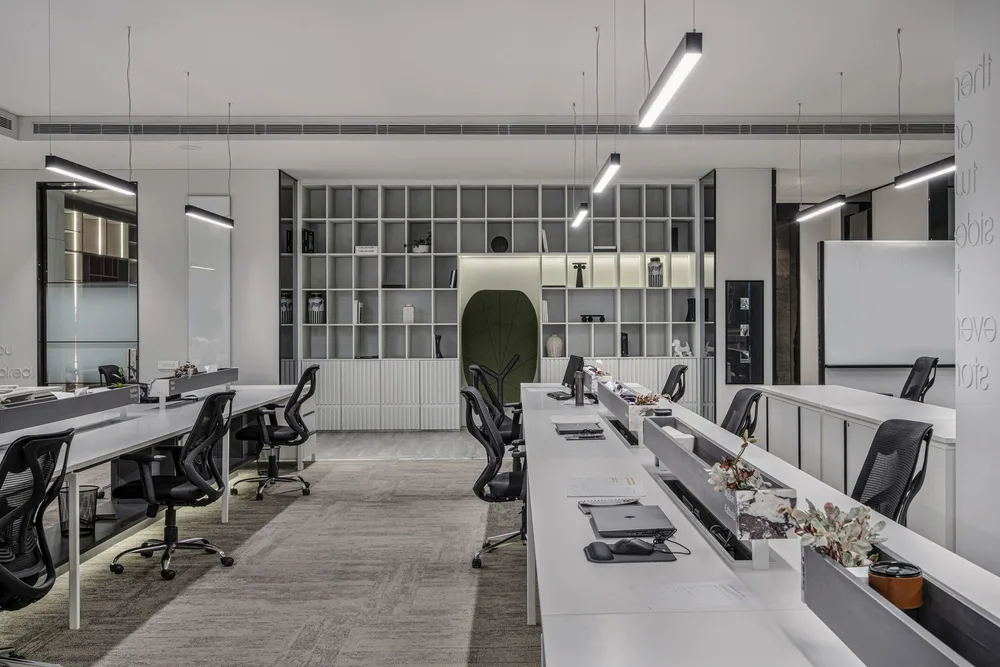
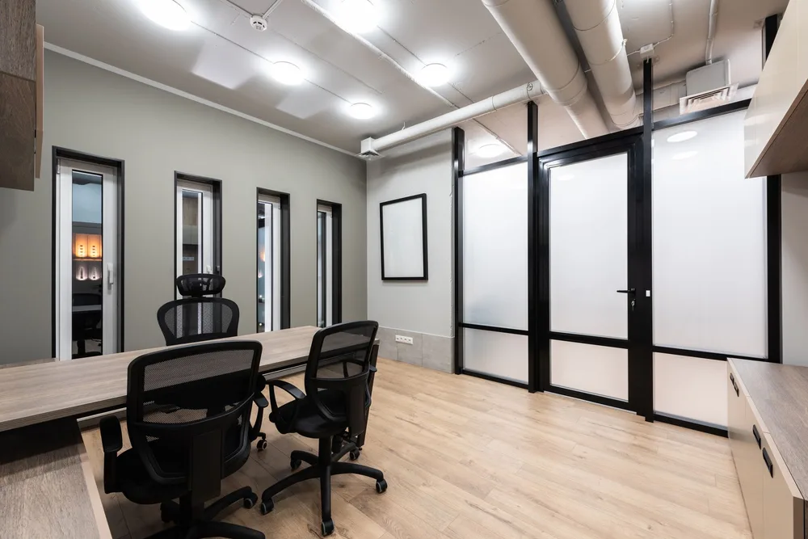
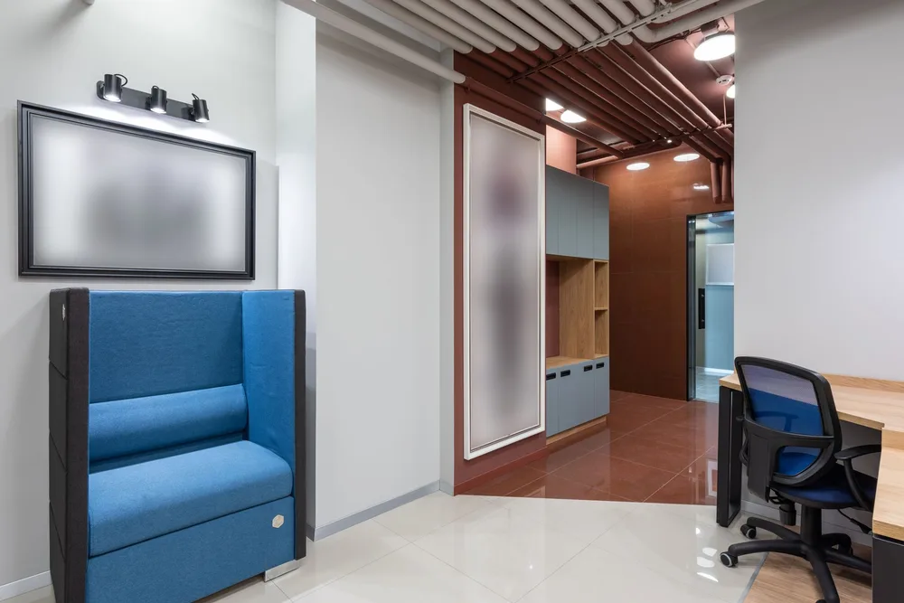
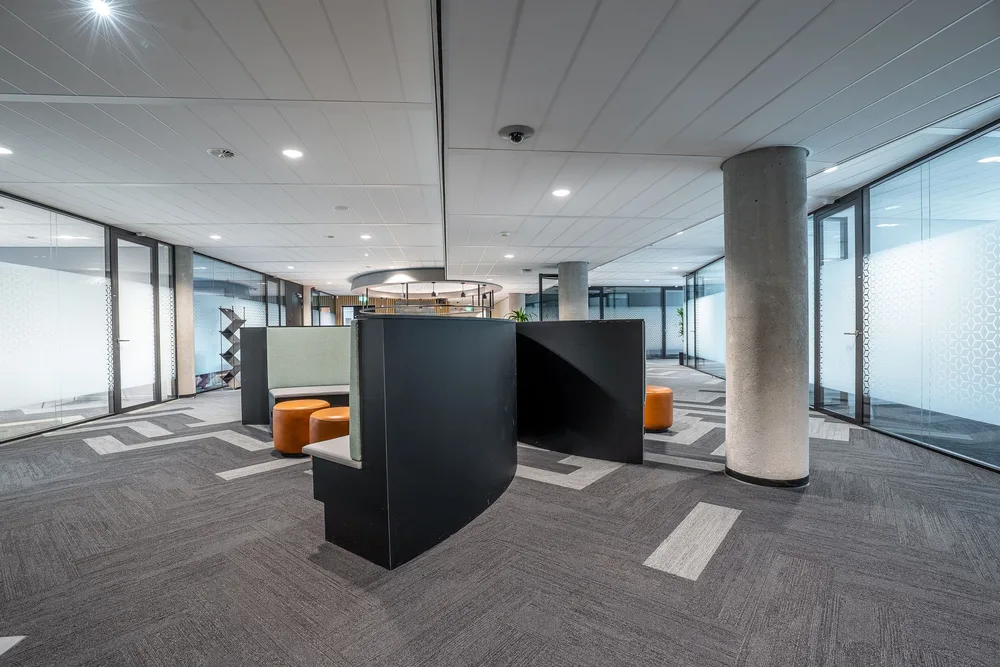
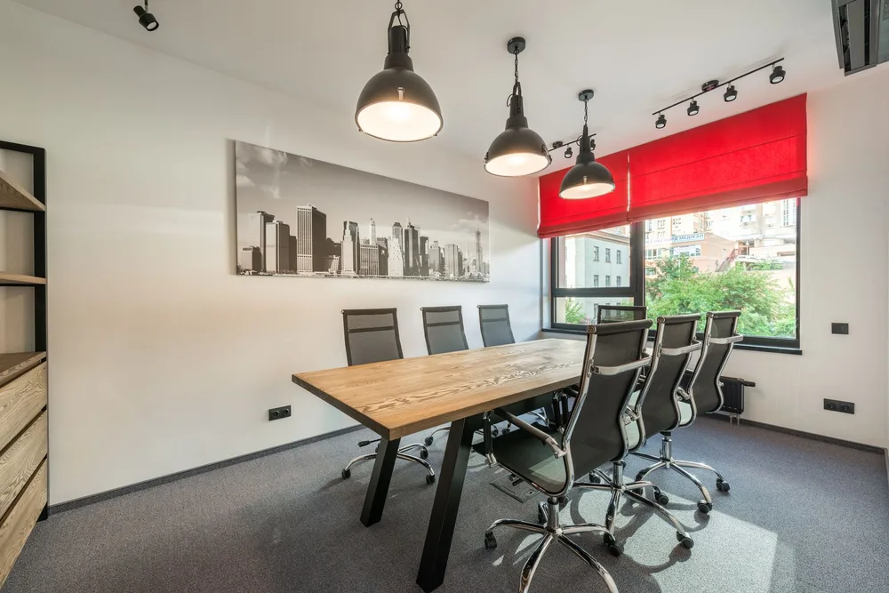
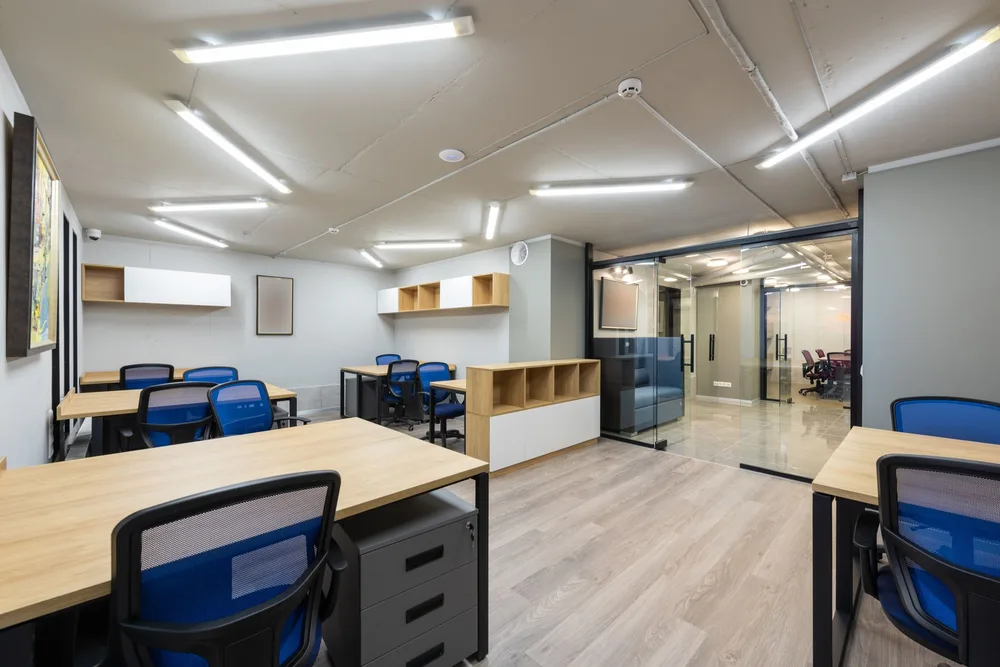
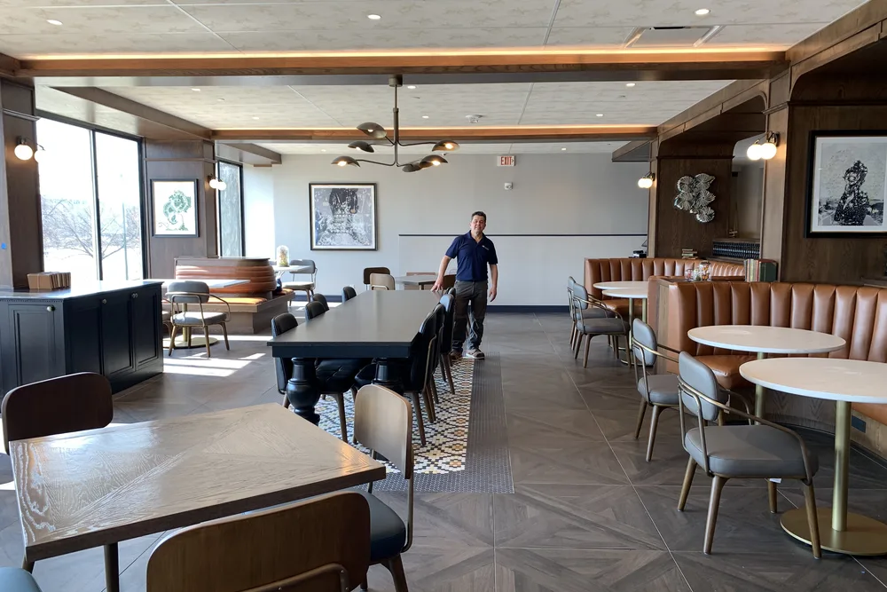
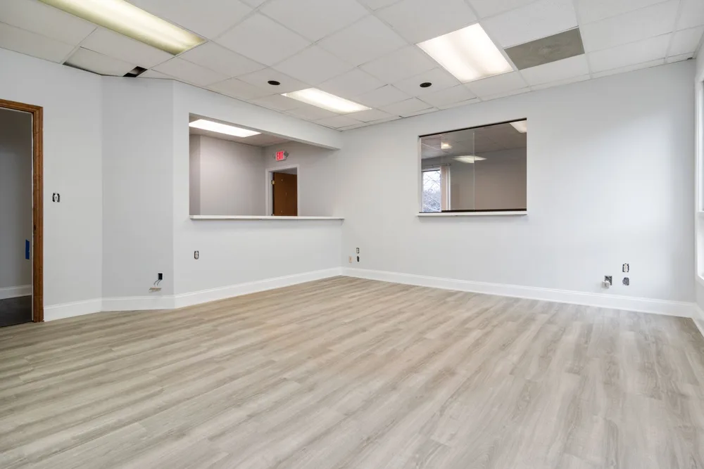

Danvers commercial remodeling contractors
Danvers commercial remodeling that respects the business around it
Danvers commercial remodeling from DeFaria Construction is planned around your operation, offices, storefronts and restaurants, with clear scheduling, scope and clean execution.
Local search focus
Danvers commercial projects are about coordination, not just construction.

Across Danversport, Tapleyville, Putnamville, Danvers Center and Hathorne, Danvers mixes colonial-era and farm homes near Danvers Center with mid-century capes and newer subdivisions. A Danvers business space is tied to revenue and customers, so scheduling, scope and communication matter as much as the finish.
This page is built for Danvers business owners comparing commercial remodeling contractors near them. It connects the Danvers search to project photos, neighborhoods, the full commercial scope and a direct estimate path.
- Clear estimate conversations before the project starts.
- Direct communication with the homeowner from walkthrough to final walkthrough.
- Local coverage across Danvers and the wider Essex County area.
The scope
What a full Danvers commercial project covers

In Danvers, colonial-era and farm homes near Danvers Center and mid-century capes often add layout and access constraints.
- A scope and timeline that protect daily operations.
- Clean coordination of demo, systems and buildout.
- Finishes built for a busy commercial space.
Danvers permits and inspections run through the Town of Danvers Building Department, and DeFaria keeps that step organized so scope and timeline stay realistic.
Cost
How much does commercial remodeling cost in Danvers?

Commercial remodeling in Danvers ranges widely by space and use, often about $50 to $200 or more per square foot depending on the buildout, systems and finish. The scope sets the price.
- Square footage and how the space is used.
- Systems and code or ADA work involved.
- Finish level and any specialty buildout.
- Whether the business stays open during the work.
In Danvers, colonial-era and farm homes near Danvers Center and mid-century capes often add layout and access constraints, so the estimate accounts for access, structure and prep before a single fixture is ordered.
DeFaria gives a fixed, itemized Danvers estimate at the walkthrough, so the price matches the actual scope instead of a guess.
Process
How a Danvers commercial project runs, step by step

A Danvers commercial project moves through set stages, coordinated around the business.
- Walkthrough, scope and a clear, itemized estimate.
- Permits, code and any inspections lined up.
- A schedule built around your operation.
- Demolition and structural or layout work.
- Mechanical, electrical and plumbing rough-in.
- Finishes, fixtures and buildout.
- Final inspection, punch list and handover.
DeFaria coordinates the Danvers permit with the Town of Danvers Building Department before the rough-in, and keeps you updated at each step.
A Danvers commercial timeline depends on the space and scope, from a few weeks for a light buildout to a few months for a full renovation.
Materials
Materials and finishes that work in Danvers commercial spaces

A Danvers commercial space takes heavy daily use, so finishes and systems are chosen to hold up and meet code.
- Flooring and surfaces rated for commercial traffic.
- Electrical, HVAC and plumbing to code.
- Finishes chosen to last in a busy space.
- Accessibility and safety built in.
Around Danversport and Tapleyville, colonial-era and farm homes near Danvers Center and mid-century capes often add layout and access constraints, so materials and waterproofing are matched to the home instead of picked from a generic list.
When to remodel
Signs it is time to remodel your Danvers commercial space

A few clear signs a Danvers business space is ready for a remodel:
- An interior that looks tired next to competitors.
- A layout that limits how the business runs.
- Moving into or fitting out a new space.
- Code or accessibility work that is overdue.
- Improving flow for customers and staff.
These come up often in Danvers homes near Danversport and Tapleyville.
Project photos
Commercial project photos for Danvers businesses
The Danvers commercial page pairs local search intent with project photos, so visitors see the finish level before requesting an estimate.

Areas covered
Commercial remodeling across Danvers neighborhoods
DeFaria Construction supports commercial remodeling searches across Danvers and nearby Essex County towns, giving visitors enough local context to decide whether DeFaria is the right fit before they call.
From Danversport to Hathorne, Danvers homeowners get a commercial projects permitted through the Town of Danvers Building Department and matched to how local homes are built.
- Danversport
- Tapleyville
- Putnamville
- Danvers Center
- Hathorne
Experience
Why this Danvers page is built for real homeowners, not just keywords.

DeFaria Construction is a local, owner-led remodeling company working across Essex County and Middlesex County. With Luiz DeFaria involved directly and an A+ BBB record behind the work, the Danvers commercial page is written around real scheduling, code and clean execution, not a city name dropped into a template.
DeFaria Construction is a licensed and insured local contractor with an A+ BBB rating and verified customer reviews, and every Danvers project is owner-led by Luiz DeFaria from the first walkthrough to the final one.
"our Danvers space finally matches the brand, and it was done cleanly."
Danvers homeowner
The goal is to help someone searching for Danvers commercial remodeling contractors understand the scope, the neighborhoods covered and how to start a direct conversation before requesting a free estimate.
Call (617) 893-2221 for a free estimateFAQ
Common questions about commercial projects in Danvers
What commercial work does DeFaria Construction handle in Danvers?
In Danvers DeFaria Construction handles office, retail and restaurant buildouts and remodels: demolition, structure, mechanical, electrical, plumbing coordination and finishes, planned around the operation.
How much does commercial remodeling cost in Danvers?
A Danvers commercial project ranges widely, often about $50 to $200 or more per square foot depending on use, systems and finish. DeFaria gives a fixed, itemized estimate at the walkthrough.
How long does a Danvers commercial project take?
It depends on the space and scope, from a few weeks for a light buildout to a few months for a full Danvers renovation. DeFaria sets a realistic schedule around your operation.
Can DeFaria work around our Danvers business hours?
Yes. DeFaria plans the Danvers schedule around your operation so the work disrupts customers and staff as little as possible.
Is DeFaria Construction licensed and insured?
Yes. DeFaria Construction is a licensed and insured contractor with an A+ BBB rating and verified reviews, and every Danvers project is owner-led by Luiz DeFaria.
Does DeFaria handle Danvers commercial permits and inspections?
Yes. Danvers permits and inspections run through the Town of Danvers Building Department, and DeFaria keeps that step organized so scope and timeline stay realistic.